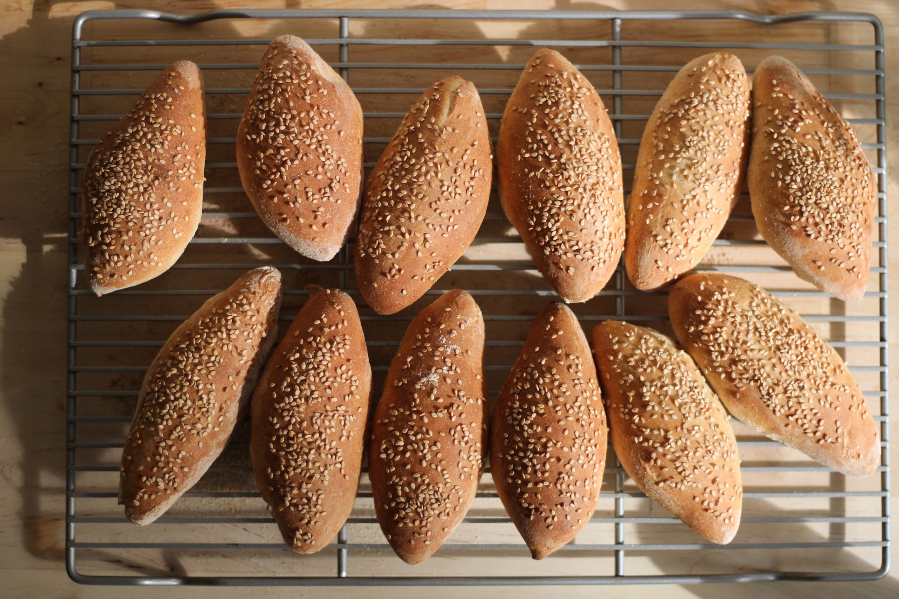

Samoon is a type of yeast bread. It is usually related to the Middle Eastern cuisine. To be more specific, it is famous in Iraq. Different people bake it in different ways. But no matter how you bake it, it is very delicious.
Meal prep time : 2 hours 20 minutes
Servings : 12